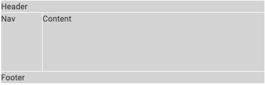
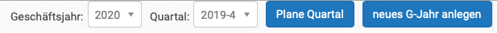
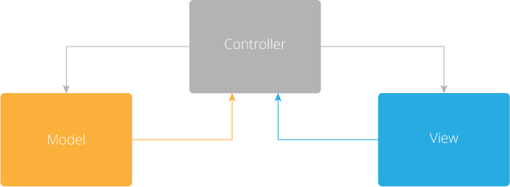
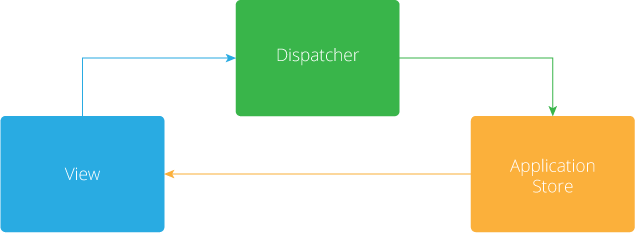

Nutzung von React-Frameworks
Dozenteneinsatzplanung mit re-frame
Johannes Brauer
2020-11-19 Thu 12:18
Einstieg
- Funktional-reaktive Programmierung keine neue Idee
[Wan2000Functional].
- Nutzung einer internen (Haskell) DSL
- Populär geworden durch das Javascript-Framework React von Facebook
- Bevorzugte Verwendung für die Erstellung von Einzelseiten-Webanwendungen (single page applications)
- Nutzung durch die Clojurescript-Adaption Reagent für Dozenteneinsatzplanung (mit Erfahrungsbericht)
Merkmale von FRP
Reaktive Systeme
- ereignis-getriebene Anwendungen
- kontinuierliche Interaktion mit ihrer Umgebung
um z. B.
- die Aktualisierung des Anwendungszustands,
- die Anzeige von Daten zu erledigen
- interaktivste Komponente einer Anwendung häufig die Benutzungsoberfläche: Reaktion auf verschiedene Ereignisse wie Mausklicks, Tastatureingaben oder die Betätigung von Schaltflächen
- Herausforderungen reaktiver Systeme:
- inhärent nebenläufig:
- Reaktion auf asynchron auftretende Ereignisse verschiedener Herkunft
- Darstellung sich verändernder Daten
- inhärent nebenläufig:
- invertierte Kontrollstruktur:
- Anwendung steuert sich nicht selbst, sondern die Ermittlung der nächsten auszuführenden Berechnung wird durch externe Ereignisse oder Systeme bestimmt.
- häufig anzutreffende Lösung: Bereitstellung von Routinen, sog. Rückruffunktionen (callback functions), die beim Auftreten bestimmter Ereignisse aktiviert werden und in der Regel zustandsändernde Operationen ausführen.
- „Callback-Hölle“: viele isolierte Programmfragmente verändern dieselben Daten
- Die geschilderten Probleme legen nahe, funktionale Programmiertechniken in Betracht zu ziehen.
Manifesto
The Reactive Manifesto definiert Eigenschaften reaktiver Systeme.
Reaktive Systeme sind
- responsive
- reagieren „zeitnah”
- resilient
- bleiben responsive auch im Fehlerfall
- elastic
- bleiben responsive auch unter Last
- message driven
- basieren auch asynchronem Nachrichtenaustausch
Schematische Darstellung interaktiver Anwendungen
Formulierung in einer internen DSL
(big-bang state ;; der Weltzustand
{:on-tick tick-handler ;; tick-handler liefert bei jedem Zeittakt neuen state
:on-key key-handler ;; key-handler berechnet aus state und key neuen state
:on-mouse mouse-handler ;; mouse-handler berechnet aus state, den Mauskoordinaten
;; und der Mausaktion neuen stat
:to-draw render ;; render verwandelt state in ein Bild (view)
:stop-when end?} ;; end? ermittelt aus state das Ende der Ausführung
...)
- Die Handler,
renderundend?sind reine Funktionen. - Die Mutation von
stateist inbig-bangversteckt. - Beispiel
Bestandteile
- Events (
:on-tick,:on-mouse, \(\ldots\)) - Handler (
tick-handler,mouse-handler, \(\ldots\)) - Views (
render)
Eigenschaften von re-frame
- Clojurescript-Framework auf Basis von Reagent/React für die Programmierung und Benutzungsoberflächen von Single-Page-Applications
- funktional
nutzt die Homoikonizitäts-Eigenschaft von Lisp:
You are programming in data. The functions which later transform data, themselves start as data.
- unidirektionaler Datenfluss
Sechs Dominosteine
- Event dispatch
- Event = Reaktion auf externe Ereignisse (Mausklick, Websocket-Nachricht etc.)
- Event handling
- Reaktion auf ein Event, notwendige Seiteneffekte werden ermittelt
- Effect handling
- Seiteneffekte werden ausgeführt
Nach diesen drei Schritten ist der App-Zustand aktualisiert. Die drei folgenden Dominosteine berechnen die Funktion \(v = f(z)\). Ein View \(v\) ist eine Funktion \(f\) des App-Zustands \(z\).
- Query
- Extraktion und Aufbereitung der Daten aus \(z\)
- View
- Rendern der Daten aus Query; Verwendung des hiccup-Formats (HTML-DSL)
- DOM
- Die DOM-Knoten des Web-Browsers werden durch Reagent/React aktualisiert.
Zusammenfassung

App-Zustand
- ein globaler Zustand (single source of truth)
- wird von re-frame automatisch angelegt:
(def app-db (reagent/atom {})) - dient quasi als Hauptspeicherdatenbank
- Alternativen
Code-Beispiele
Html-DSL
- In View-Komponenten wird gemäß re-frame-Dokumentation das mit Reagent bereitgestellte hiccup-Format als HTML-DSL verwendet.
- In der Dozenteneinsatzplanung wird überwiegend eine auf hiccup
aufbauende DSL benutzt: re-com. Re-com stellt
- die üblichen Widgets
- Layout-Komponenten für die Anordnung von Widgets und Layout-Komponenten (horizontale und vertikale Boxen) zur Verfügung.
- Beispiel für eine Schaltfläche:
[button
:class "btn-primary"
:on-click #(plane-quartal)
:label "Plane Quartal"]
<div class="rc-box display-flex rc-button-wrapper display-inline-flex"
style="flex-flow: inherit; flex: 0 0 auto; align-items: flex-start;">
<button class="rc-button btn btn-primary" style="flex: 0 0 auto;">
Plane Quartal</button>
</div>
Layout-Beispiel
[v-box :children [[box :child "Header"] [h-box :height "100px" :children [[box :size "70px" :child "Nav"] [box :size "1" :child "Content"]]] [box :child "Footer"]]]resultiert in:

View-Komponente für Auswahl von Geschäftsjahr und Quartal

- Die View-Funktion
geschaeftjahr-quartal-formrendert in den Zeilen 19 und 20 die Auswahlbox für das aktuelle Geschaeftsjahr. - Wählt der Benutzer ein Geschäftsjahr aus, wird die Handlerfunktion
dispatchaufgerufen. - Dadurch wird ein re-frame-Event (Domino 1) ausgelöst.
- Jedes Event wird durch ein Vektor beschrieben:
- Das Keyword
:geschaeftsjahrbenennt das Event. - Der Ausdruck
(:key %)liefert das ausgewählte Geschäftsjahr.
- Das Keyword
(defn geschaeftjahr-quartal-form
"Die Auswahlboxen für Geschäftsjahr und Quartal und die Planungsschaltfläche."
[]
(let [jahre @(rf/subscribe [:jahre])
quartale @(rf/subscribe [:quartale])
quartal @(rf/subscribe [:quartal])
geschaeftsjahr @(rf/subscribe [:geschaeftsjahr])]
[h-box :class "bg-light border-right" :gap "10px"
:children
[(select-box "Geschäftsjahr:" jahre geschaeftsjahr
#(rf/dispatch [:geschaeftsjahr (:key %)]))
(select-box "Quartal:" quartale (quartal->string quartal)
#(rf/dispatch [:quartal (:key %)]))
[button
:class "btn-primary"
:on-click #(plane-quartal)
:label "Plane Quartal"]
[button
:class "btn-primary"
:on-click #(neues-geschaeftjahr)
:label "neues G-Jahr anlegen"] ]]))
Der Handler für das Event :geschaeftsjahr
- Event-Bezeichner sind Teil der DSL für das programmierte re-frame-System.
- Der folgende Ausdruck registriert den Handler für das Event
:geschaeftsjahr. - Das zweite Argument von
rf/reg-event-dbist der eigentliche Event-Handler (Domino 2), hier eine anonyme Funktion. - Diese Funktion erwartet zwei Argumente:
- die Datenbank mit dem globalen Zustand der Anwendung
- einen Vektor, dessen erstes Element hier irrelevant ist und dessen zweites Element das zweite Element des Dispatch-Vektors enthält (hier: das vom Benutzer ausgewählte Geschäftsjahr).
- Der Rumpf des Handlers beschreibt die Änderung der Datenbank:
- Das Geschäftsjahr wird auf das vom Benutzer selektierte gesetzt.
- Das Quartal wird auf das erste des Geschäftsjahrs gesetzt.
(rf/reg-event-db
:geschaeftsjahr
(fn [db [_ item]]
(assoc db
:geschaeftsjahr (js/parseInt item)
:quartal (first (quartale-fuer-jahr item)))))
Das Effect-Handling für das Event :geschaeftsjahr
- Im Allgemeinen verarbeiten Effect-Handler-Funktionen das Resultat der Event-Handler-Funktion (Domino 2).
- Dieses sieht meistens so aus:
{:db new-db}, wobeinew-dbdie vom Event-Handler berechnete neue Datenbank ist. - Der Effect-Handler für den Effect
:dbist in re-frame vordefiniert und setzt die Datenbank auf den neuen Wert (Mutation!). In dem Fall muss der Programmierer für Domino 3 nichts tun. - Für andere Effekte können eigene Effect-Handler registriert werden.
Query – View – DOM
- Nachdem der Zustand der Applikation neu berechnet ist, wird ein neues View ermittelt: \(v = f(s)\).
- Eine Anwendung enthält in der Regel mehrere View-Funktionen,
geschaeftjahr-quartal-formist eine der View-Funktionen der Dozenteneinsatzplanung. - Jede View-Funktion definiert Queries für die Teile der Datenbank, deren Änderung eine Neuberechnung des Views erfordert.
- Durch den Ausdruck
(rf/subscribe [:geschaeftsjahr])wird eine Query-Funktion mit der Kennung:geschaeftsjahrregistriert.
(defn geschaeftjahr-quartal-form
"Die Auswahlboxen für Geschäftsjahr und Quartal und die Planungsschaltfläche."
[]
(let [jahre @(rf/subscribe [:jahre])
quartale @(rf/subscribe [:quartale])
quartal @(rf/subscribe [:quartal])
geschaeftsjahr @(rf/subscribe [:geschaeftsjahr])]
[h-box :class "bg-light border-right" :gap "10px"
:children
[(select-box "Geschäftsjahr:" jahre geschaeftsjahr
#(rf/dispatch [:geschaeftsjahr (:key %)]))
(select-box "Quartal:" quartale (quartal->string quartal)
#(rf/dispatch [:quartal (:key %)]))
[button
:class "btn-primary"
:on-click #(plane-quartal)
:label "Plane Quartal"]
[button
:class "btn-primary"
:on-click #(neues-geschaeftjahr)
:label "neues G-Jahr anlegen"] ]]))
- Die anonyme Query-Funktion wird mithilfe von
reg-subregistriert. - Sie liefert das in der Datenbank gespeicherte aktuelle Geschäftsjahr als Resultat.
(rf/reg-sub
:geschaeftsjahr
(fn [db _]
(:geschaeftsjahr db)))
- Jede Änderung des Geschäftsjahrs führt zur Ausführung der
View-Funktion
geschaeftjahr-quartal-formsowie - aller für
:geschaeftsjahrregistrierten View-Funktionen. - Die View-Funktionen berechnen das DOM neu, alles Weitere erledigt React.
View-Komponente für die Anzeige der Dozentenauslastung
- Eine weitere für die Kennung
:geschaeftsjahrregistrierte View-Funktion istdozentenauslastung. - Neben dem
:geschaeftsjahrist die Funktion für die Query-Funktionen:dozentenund:lven(Lehrveranstaltungen) registriert.
(defn dozentenauslastung
"Komponente für die Anzeige der Dozentenauslastung."
[]
(let [dozenten @(rf/subscribe [:dozenten])
geschaeftsjahr @(rf/subscribe [:geschaeftsjahr])
lven @(rf/subscribe [:lven])
_ (aktualisiere-dozentenauslastung lven dozenten geschaeftsjahr)]
[table-ui
(doz-auslstngn->table dozenten)
"Dozentenauslastung"
[:Dozent :Q4 :Q1 :Q2 :Q3 :Summe]
[:Dozent :Q4 :Q1 :Q2 :Q3 :Summe]
[[:Dozent false]]
td-render-fn ]))
- Im Rumpf der Funktion werden mithilfe einer weiteren internen DSL die Auslastungsdaten der Dozenten in eine HTML-Tabelle verwandelt.
Infos aus der re-frame-Dokumentation
FRP vs. MVC
Model-View-Controller
Datenfluss

- repräsentiert das Single Responsibility Principle
- komplexere Anwendungen (mit intensiver Benutzerinterkation)
überfordern den Controller:
- Verwaltung des Anwendungszustands
- Mittler zwischen View und Model
Model-Binding
Datenfluss

- Anwendungszustand und -daten werden von zwei Quellen manipuliert – unter Umgehung des Controllers
- Vorteil: Controller wird entlastet
- Nachteil: Der aktuelle Zustand ist schwer vorhersagbar
Unidirektionaler Datenfluss

- Änderungen im View löst Aktionen in der Datenkomponente (Application-Store) aus.
- Diese Änderungen haben Rückwirkungen auf die View-Komponente
- Kein direkter Zugriff von View auf die Application-Store
- In React ist der View eine (pure) Funktion der Anwendungsdaten.
Literaturverzeichnis
- [Wan2000Functional] Wan & Hudak, Functional Reactive Programming from First Principles, 242-252, in in: Proceedings of the ACM SIGPLAN 2000 conference on Programming language design and implementation - PLDI '00, edited by ACM Press (2000)
- [Ferreira19] Esdras Portilho Araujo Ferreira, Unidirectional circular dataflow architecture for real-time updates, School of Computing Dublin City University, (2019).